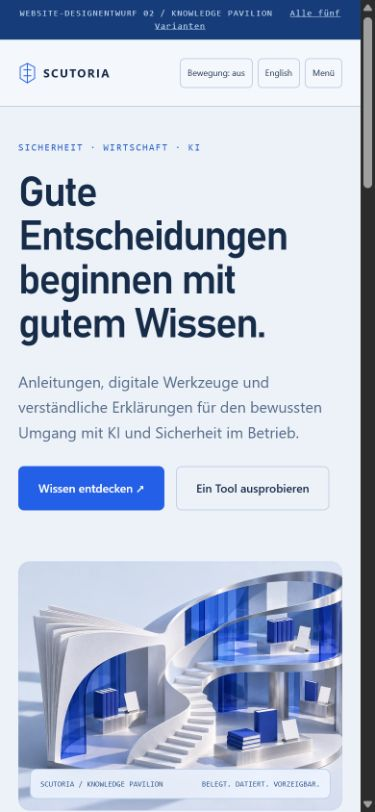
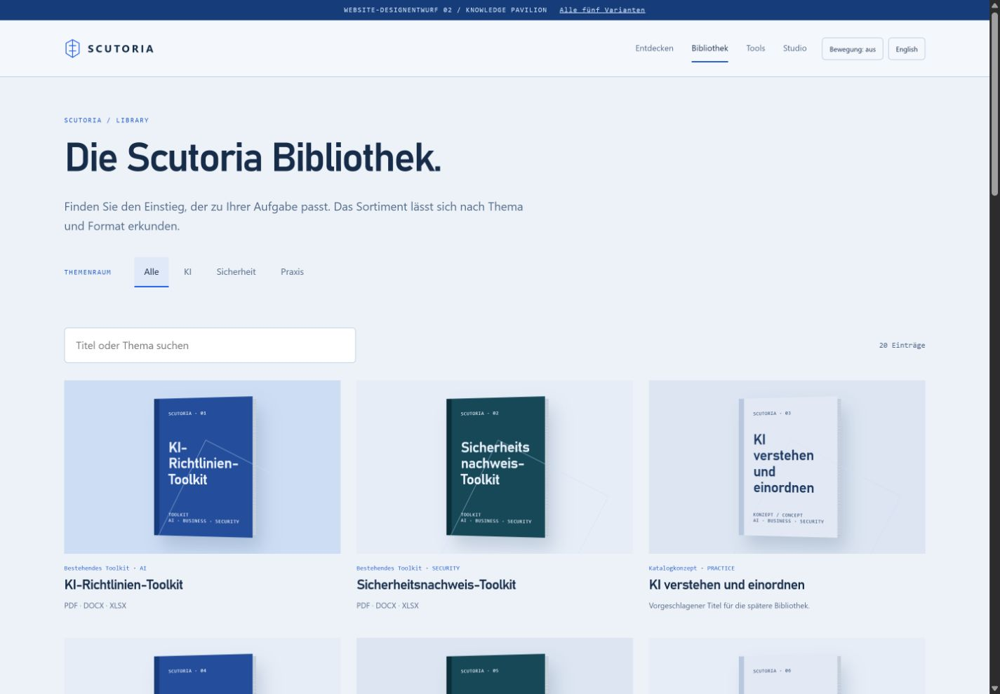
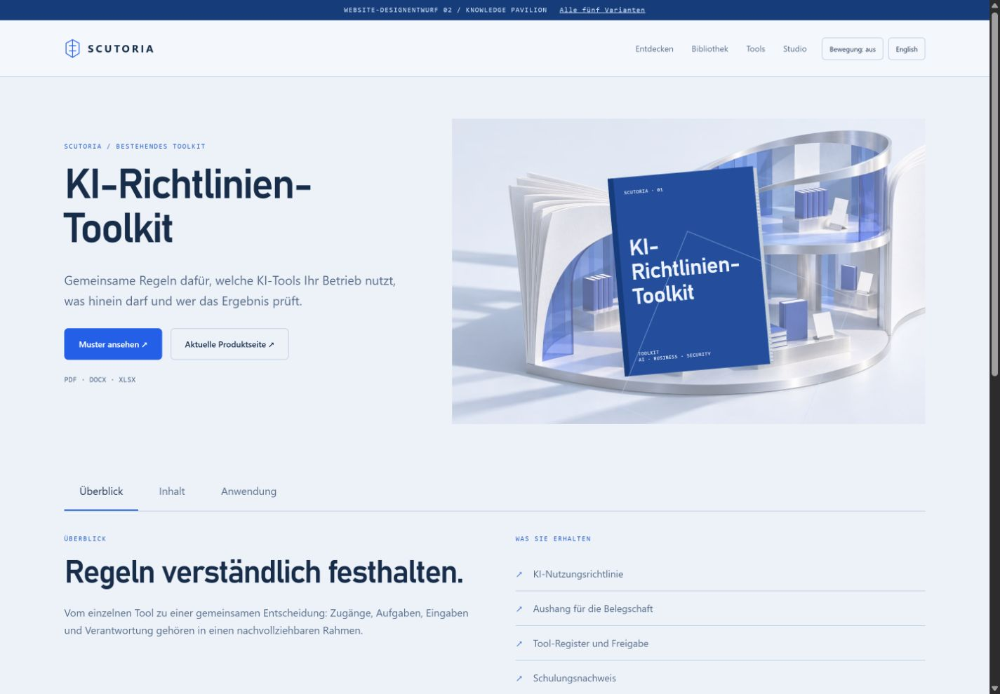
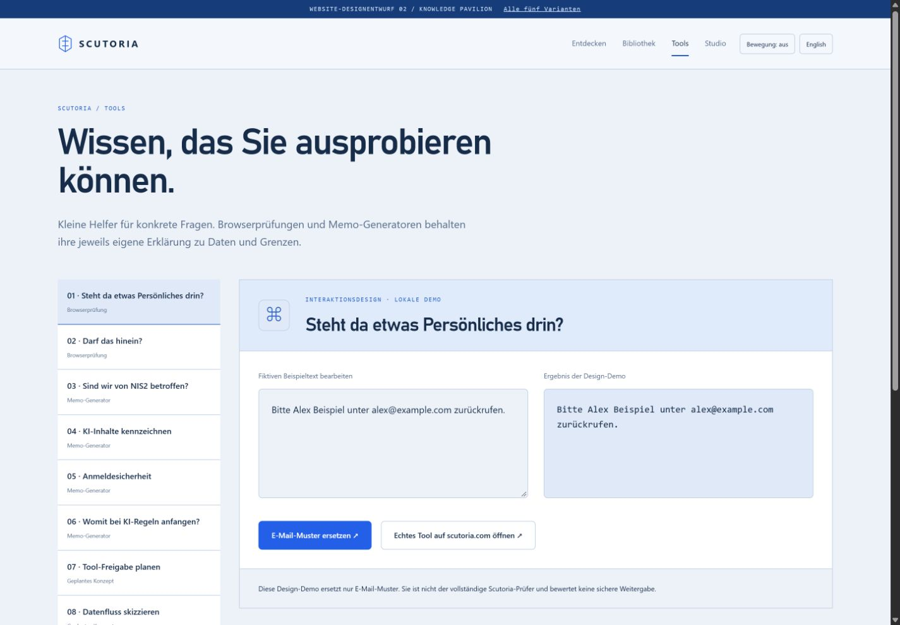
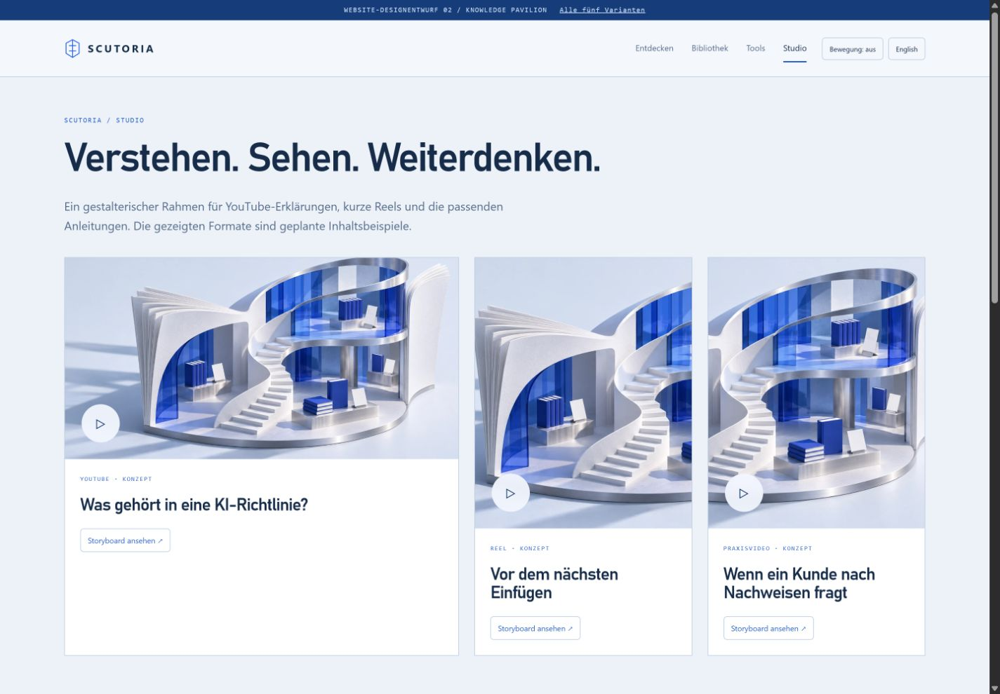

Helle Architektur, viel Licht und eine klare Verlagssprache. Wissen wirkt zugänglich und hochwertig.





Lokaler Designprototyp · neue Titel und Videos sind Konzepte · Animationen in den interaktiven Varianten.